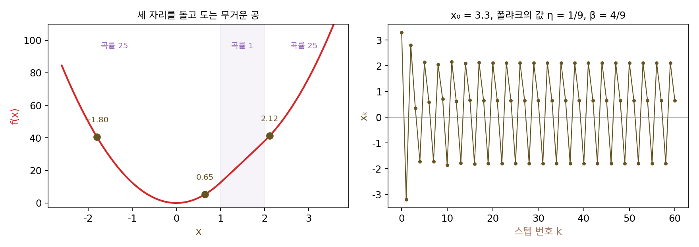
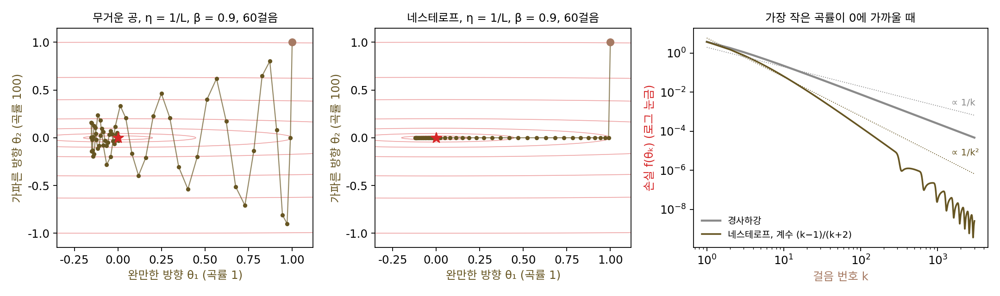
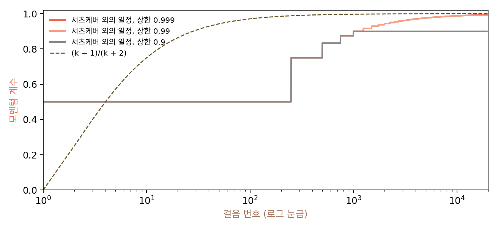
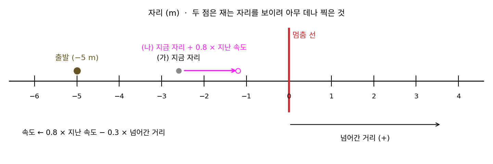
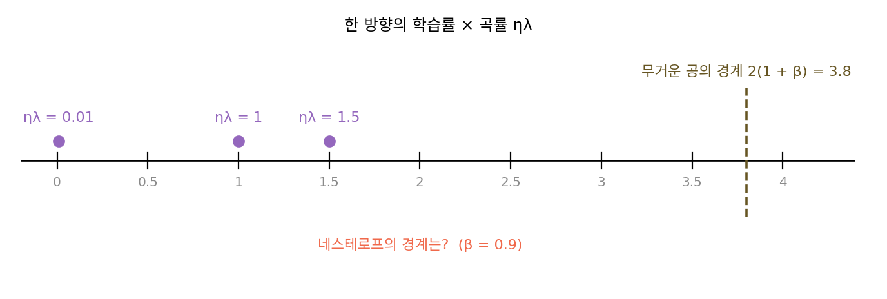
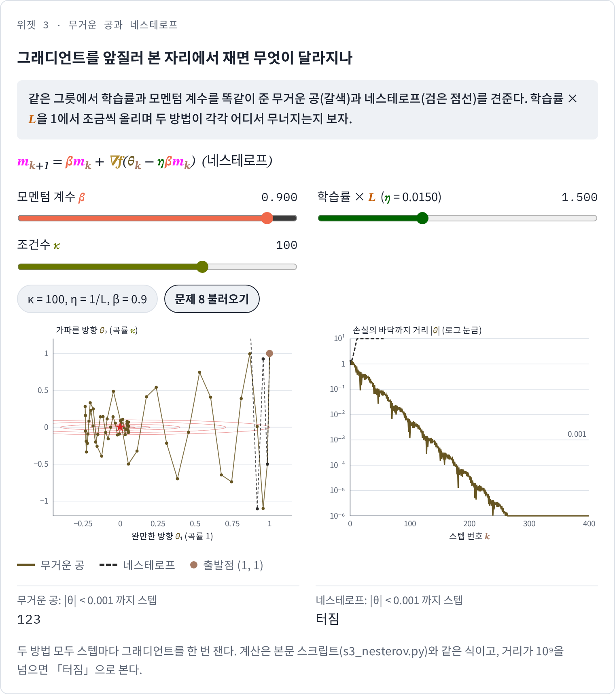
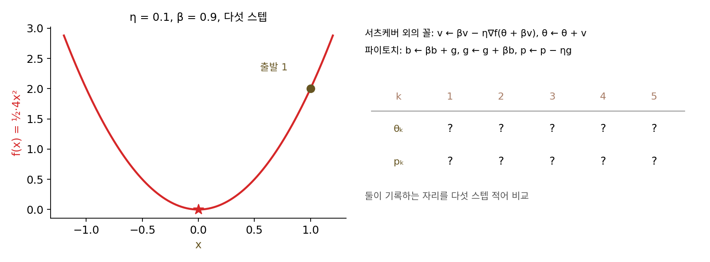

네스테로프 가속: 앞질러 보고 고친다
폴랴크의 학습률과 모멘텀 계수는 2차 함수에서 셈한 값이었지만, 실제 손실은 2차 함수가 아니다. 곡률이 1인 곳과 25인 곳이 이어 붙은, 어디서나 아래로 볼록하고 그래디언트도 매끄러운 1차원 함수 f(x) = 25x²/2 (x < 1), x²/2 + 24x − 12 (1 ≤ x < 2), 25x²/2 − 24x + 36 (x ≥ 2)를 생각하자. 곡률의 최솟값 μ = 1, 최댓값 L = 25, 바닥은 x = 0이다. 폴랴크의 값 η = 1/9, β = 4/9로 x₀ = 1.5나 3.0에서 출발하면 바닥에 닿는다. 그런데 x₀ = 3.3에서 출발하면 −1.8024 → 2.1159 → 0.6465 → −1.8024 → …로 세 자리를 영원히 돈다. 학습률 0.9/L = 0.036의 경사하강은 같은 출발점에서 다섯 스텝이면 바닥에 닿는데, 가속하겠다고 기억을 더한 공이 바닥 둘레를 맴돈다. 로런트 레서드(Laurent Lessard), 벤저민 레크트(Benjamin Recht), 앤드루 패커드(Andrew Packard)는 2014년에 공개한 논문에서 바로 이 함수(조건수 25)를 들어 무거운 공이 최솟값을 찾지 못한다는 것을 보였다. 그 논문의 제목은 「적분 이차 제약으로 최적화 알고리즘을 분석하고 설계하기(Analysis and Design of Optimization Algorithms via Integral Quadratic Constraints)」다. 그들은 출발점이 3.07에서 3.46 사이이면 출렁임이 영영 잦아들지 않는다고 적었고, 출발점 3.3을 예로 그렸다. 위의 숫자는 이 책의 스크립트로 다시 계산한 것이다. 출발점을 0에서 5까지 0.01 간격으로 바꿔 보면 논문의 구간 3.07~3.46이 그대로 나오고, 그 밖에 0.98~1.03과 2.76~2.92에서 출발해도 바닥 0.001 안에 들지 못한다. 2차 함수에서 셈한 가속을, 2차 함수가 아닌 함수에서도 잃지 않으려면 무엇을 바꿔야 할까?

역사: 박사 학위를 받기 전의 네스테로프
모스크바 대학에서 응용 수학을 공부한 유리 네스테로프(Yurii Nesterov)는 1977년부터 소련 과학원 중앙경제수학연구소의 연구원으로 일했다. 1982년 7월 19일, 그는 소련 과학원 회보(Doklady)에 다섯 쪽짜리 글 「수렴 속도 O(1/k²)로 볼록 계획 문제를 푸는 방법」을 보냈고 글은 이듬해 실렸다. 회보에 글을 실으려면 과학원 정회원이 글을 소개해야 했는데, 이 글을 소개한 사람은 선형계획법의 개척자이자 1975년 노벨 경제학상을 받은 레오니트 칸토로비치(Leonid Kantorovich)였다. 네스테로프가 박사 학위를 받은 것은 그다음 해인 1984년이다.
제목의 O(1/k²)이 그 글의 요점이다. 바닥이 평평하게 퍼져 가장 작은 곡률을 0으로 볼 수밖에 없는 볼록 함수(조건수를 무한대로 보아야 하는 함수)에서, 경사하강이 보장할 수 있는 것은 k스텝 뒤 손실이 최솟값보다 큰 만큼이 1/k에 비례해 준다는 것까지였다. 네스테로프의 방법은 그래디언트의 립시츠 상수와 출발점에서 바닥까지의 거리로 정해지는 상수 × 1/k²을 보장했다. 스텝을 열 배로 늘리면 그만큼이 백 배 준다. 그리고 그 보장은 2차 함수만이 아니라 그래디언트가 립시츠 연속인 모든 볼록 함수에서 성립했다. 네스테로프는 1993년 벨기에 루뱅 대학의 운용과학·계량경제학 연구소(CORE)로 옮겨 볼록 최적화 연구를 이어 갔고, 2004년에 낸 교과서 『볼록 최적화 입문 강의』에서 이 방법이 네미롭스키와 유딘의 하한에 닿는다는 것을 정리했다.

그래디언트 재는 자리만 바꾼 거면 다섯 쪽으로 충분했겠네요. 박사 학위 받기 전에 낼 만하고요.

바꾼 것은 한 줄이에요. 그런데 그 글이 1/k²을 보장한 함수는 어떤 함수들이었죠?

그래디언트가 립시츠 연속인 볼록 함수 전부요. … 「전부」가 걸리네요. 함수 몇 개에서 돌려 보고 전부라고 할 수는 없잖아요.

그래요. 폴랴크의 값으로 굴린 무거운 공이 세 자리를 맴돌던 조각마다 2차인 함수도 2014년 논문에 나온 거예요. 지금은 출발점을 0.01 간격으로 500번쯤 바꿔 보는 일이 스크립트 몇 줄이지만, 그렇게 돌려 봐도 함수 하나의 이야기예요. 모든 볼록 함수를 덮는 것은 증명뿐이었어요.

게다가 볼록 계획 문제를 푸는 글이었으니, 신경망을 하던 사람들 눈에는 모멘텀과 같은 것으로 안 보였겠네요.

무거운 공에서 바꾸는 것이 그래디언트를 재는 자리 하나뿐이라면, 어디서 재야 공이 바닥 너머로 넘어갈 걸 미리 알 수 있을까요?
앞질러 본 자리에서 그래디언트 재기
무거운 공은 왜 맴돌까? 공이 하는 일을 순서대로 보면, 공은 지금 자리에서 그래디언트를 재고 그다음에 기세 βm까지 더해 움직인다. 기세가 공을 바닥 너머로 실어 가더라도, 그래디언트는 그 기세를 타기 전인 지금 자리에서 잰 것이라 넘어갈 곳을 모른다. 네스테로프의 방법은 순서를 바꾼다. 기세대로 먼저 가 보면 닿을 자리 θₖ − ηβmₖ를 앞질러 보고, 거기서 그래디언트를 잰다.
무거운 공과 다른 곳은 그래디언트를 재는 자리 하나뿐이고, 스텝마다 그래디언트를 한 번 재므로 비용도 같다. 이렇게 지난 기세로 앞질러 본 자리의 그래디언트로 기세를 고치는 방법을 네스테로프 가속 (앞질러 보고 고치기 / Nesterov accelerated gradient)이라 한다.
조건수 100 그릇에서 학습률 1/L = 0.01, 모멘텀 계수 0.9를 똑같이 주고 둘을 비교해 보자. 무거운 공은 126스텝, 네스테로프는 62스텝이 걸리는데, 그 차이는 가파른 방향에서 난다. 무거운 공의 θ₂는 1 → 0 → −0.9 → −0.81 → 0.081 → 0.80으로, 첫 스텝에 바닥에 닿고도 버퍼에 남은 기세 때문에 다시 −0.9로 넘어간다. 네스테로프는 첫 스텝 뒤 θ₂ = 0, 버퍼 m = 100에서 앞질러 본 자리가 0 − 0.01 × 0.9 × 100 = −0.9이고, 거기서 잰 그래디언트 100 × (−0.9) = −90이 남은 기세 0.9 × 100 = 90을 정확히 지운다. 그 뒤로 θ₂가 0에 머무는 것은, 기세가 넘어갈 곳의 그래디언트가 미리 브레이크를 걸었기 때문이다.
강볼록이 아닌 함수에서는 계수를 스텝마다 키운다. 요즘 흔히 쓰는 꼴은 스텝 k의 계수를 (k − 1)/(k + 2)로 두는 것이다(처음 0에서 1로 다가간다). 곡률이 (i/100)²(i = 1, …, 100)인 100차원 2차 함수는 가장 큰 곡률이 1, 가장 작은 곡률이 0.0001이라 조건수 10000으로, 바닥이 거의 평평한 함수다. 학습률 1로 출발점 (1, …, 1)(손실 16.918)에서 내려가면:
| 스텝 k | 경사하강의 손실 | 네스테로프의 손실 |
|---|---|---|
| 10 | 0.2262 | 0.06566 |
| 100 | 0.007760 | 0.0001626 |
| 1,000 | 0.0002475 | 0.00000002980 |
스텝을 열 배 늘릴 때마다 경사하강의 손실은 약 30배씩 줄었고, 네스테로프는 10스텝에서 100스텝까지 약 400배, 100스텝에서 1000스텝까지 약 5500배 줄었다. 이론이 보장하는 상한은 경사하강이 1/k, 네스테로프가 1/k² 꼴이고, 이 함수는 두 방법 모두 상한보다 빨랐다.

ML에서: 서츠케버의 다시 쓰기와 nesterov=True
네스테로프의 1983년 글은 볼록 최적화의 언어로 쓰여 있었고, 오랫동안 신경망 쪽에서는 모멘텀과 다른 무엇으로 여겨졌다. 네스테로프의 방법을 위의 꼴, 곧 「그래디언트를 앞질러 본 자리에서 재는 모멘텀」으로 다시 적은 사람은 일리야 서츠케버(Ilya Sutskever), 제임스 마튼스(James Martens), 조지 달(George Dahl), 제프리 힌턴(Geoffrey Hinton)이다. 네 사람이 2013년 국제 기계학습 학회(ICML)에 낸 논문 「딥러닝에서 초기화와 모멘텀의 중요성에 대하여(On the importance of initialization and momentum in deep learning)」에서다. 그 뒤로 네스테로프 가속은 모멘텀의 한 변형으로 읽히게 되었다.
그 논문의 주장은 더 컸다. 그때까지 깊은 신경망과 순환 신경망을 처음부터 학습시키는 일은 헤시안을 직접 만들지 않고 헤시안과 벡터의 곱만 쓰는 2차 방법(헤시안 없는 최적화)이 해내던 일이었는데, 초기화를 잘 하고 모멘텀 계수를 천천히 키우면 모멘텀을 쓴 확률적 경사하강도 그 수준에 닿는다는 것이다. 그들이 쓴 일정은 스텝 t에서 계수를 min(1 − 2^(−1 − log₂(⌊t/250⌋ + 1)), 상한)으로 두는 것이었다. 250스텝마다 계수가 0.5, 0.75, 0.833, …으로 1에 다가가고, 상한은 0.999, 0.995, 0.99, 0.9, 0 가운데서 골랐다. 그들은 이 일정이 네스테로프의 계수를 손질한 꼴(1 − 3/(t + 5))에서 착안한 것이라고 적었다.

파이토치의 torch.optim.SGD(..., momentum=0.9, nesterov=True)가 이 꼴이고, 파이토치 문서도 이 기능이 서츠케버와 동료들의 식을 바탕으로 했다고 적는다. 다만 파이토치 코드는 앞질러 본 자리의 그래디언트를 따로 재지 않고, 지금 자리의 그래디언트와 버퍼만으로 같은 업데이트를 해낸다. 어떻게 그럴 수 있는지는 아래 문제 9에서 확인한다.
문제 7. 빙판의 멈춤 선
처음에는 선 앞 5 m(자리 −5)에 서 있다가, 스케이트를 타고 멈춤 선을 향해 미끄러진다. 1초마다 속도는 「0.8 × 지난 속도 − 0.3 × (선을 넘어간 거리)」로 바뀌고, 그만큼 자리를 옮긴다(선 앞이면 넘어간 거리가 음수라 앞으로 민다). (가) 「넘어간 거리」를 지금 자리에서 잴 때, 가장 멀리 넘어가는 거리와, 이후 줄곧 선의 5 cm 안에 머무는 때는? (나) 「넘어간 거리」를 「지금 속도대로 1초 미끄러지면 닿을 자리(지금 자리 + 0.8 × 지난 속도)」에서 잴 때는?

계산은 둘 다 같은 걸 하니까 결과도 비슷하겠죠. 미리 보든 안 보든 결국 같은 힘으로 밀고 당기니까요. 지금 자리에서 재면 −3.5, −1.25, 0.925, 2.388, 2.841, 2.352 m로, 2.841 m까지 넘어가요.
미리 보는 쪽도 돌려 보죠. 넘어가는 거리가 같나요?
−3.5, −1.61, −0.069, 0.815, 1.066, 0.886이요. 1.066 m밖에 안 넘어가요. 5 cm 안에 머무는 것도 40초에서 14초로 줄었어요. 둘째 초부터 갈려요.
둘째 초에 지금 자리는 −3.5라 「아직 멀었다」고 세게 미는데, 미리 본 자리는 −3.5 + 0.8 × 1.5 = −2.3이라 덜 밀어. 셋째 초에는 미리 본 자리가 이미 선을 넘을 참이라 당기기 시작하고.
실제로는 지금 자리 말고 미리 본 자리에 무슨 정보가 들어 있는 거죠?

지금 속도요. 지금 자리만 보면 속도를 모르니까 세게 미끄러지는 중인지 거의 멈춘 중인지 구별을 못 해요. 미리 본 자리는 속도까지 반영하니까 멈출 때를 일찍 알아요. 아까 그릇에서 네스테로프가 가파른 방향을 한 스텝에 세운 것도 같은 원리예요.

자전거로 내리막 커브를 돌 때 바로 앞바닥 말고 몇 미터 앞을 보라는 거랑 같네요. 시험공부도 「지금 몇 쪽 했나」 말고 「이 속도면 시험날까지 어디까지 가나」를 봐야 덜 허둥대고요.
문제 8. 방향마다 실제로 걸리는 모멘텀
곡률 λ인 한 방향에서 네스테로프의 업데이트를 한 줄로 합치면 xₖ₊₁ = (1 − ηλ)[(1 + β)xₖ − βxₖ₋₁]이다. (가) 무거운 공의 한 줄 꼴 xₖ₊₁ = (1 + β′ − ηλ)xₖ − β′xₖ₋₁과 견주면, 네스테로프는 이 방향에 실제로 어떤 모멘텀 계수 β′를 거는 셈인가? (나) β = 0.9에서 ηλ = 0.01, 1, 1.5일 때 (가)의 β′ 값과 근의 크기는? (다) 무거운 공은 ηλ < 2(1 + β)면 안정했다. 네스테로프는? (풀어 본 뒤 위젯 3의 「문제 8 불러오기」로 확인해 보자.)

(가)는 xₖ₋₁ 앞을 맞추면 β′ = β(1 − ηλ)야. xₖ 앞도 확인하면 1 + β(1 − ηλ) − ηλ = (1 − ηλ)(1 + β)라서 맞아. 완만한 방향(0.01)은 0.891, 곡률이 1/η인 방향은 0이야. 그릇에서 가파른 방향이 한 스텝에 선 게 이거였네.
그럼 네스테로프는 무거운 공보다 늘 안전하겠네요. 모멘텀이 저절로 줄어드니까 학습률을 더 키워도 되고요. 무거운 공이 3.8까지 버텼으니 네스테로프는 그 이상이겠죠.
ηλ = 1.5를 넣어 보세요. 실제 모멘텀은요?

0.9 × (1 − 1.5) = −0.45. 음수예요. 근은… 1.297과 0.347. 1을 넘었어요! 같은 1.5에서 무거운 공은 크기 0.9487의 복소수 근이라 멀쩡한데요.

근 하나가 −1을 지나는 경계를 구해 봐요.

문제 6에서 한 대로 해 볼게요. 한 줄 꼴에 rᵏ을 넣으면 r² − (1 − ηλ)(1 + β)r + (1 − ηλ)β = 0이고, 여기에 r = −1을 넣으면 1 + (1 − ηλ)(1 + β) + (1 − ηλ)β = 0, 곧 ηλ = 2(1 + β)/(1 + 2β)예요.
β = 0.9를 넣으면?
3.8/2.8 = 1.357. 1.35에서 근의 크기가 0.9848, 1.36에서 1.0061로 넘어.

무거운 공은 3.8/L이었는데 네스테로프는 1.357/L? 출렁임을 줄여 준다면서 벼랑은 훨씬 앞이네.
실제 모멘텀 β(1 − ηλ)의 부호는 ηλ가 1을 넘기 전과 뒤에 어떻게 달라지죠?
1 전에는 양수라 가파른 방향의 모멘텀을 줄여 주는데, 학습률이 1/λ을 넘으면 음수가 돼서 모멘텀을 거꾸로 걸어 버려요. 출렁임을 줄이는 장점과 벼랑을 앞당기는 단점이 모두 β(1 − ηλ) 한 식에서 나와요. 대수 시간에 같은 인수가 구간에 따라 부호를 바꾸던 것처럼요.

nesterov=True로 바꿀 때 lr을 그대로 두면 안 될 수도 있겠네요. 무거운 공에서 벼랑 근처까지 lr을 올려 둔 설정이면 네스테로프로 바꾸자마자 터질 수 있어요. 조교님이 채점 기준을 엄격하게 바꾸셨는데, 예전처럼 아슬아슬하게 내던 친구들이 제일 먼저 걸리는 거랑 같아요.
위젯 3에서 문제 8 설정을 불러와, 가파른 방향의 ηλ가 1.5일 때 두 방법의 길이 어떻게 갈리는지 보세요.

문제 9. 파이토치는 어느 자리를 기록하나
파이토치의
nesterov=True는 스텝마다 b ← βb + g, g ← g + βb, p ← p − ηg를 한다(g는 지금 자리 p에서 잰 그래디언트, 첫 스텝은 b = g). 서츠케버 외의 꼴은 v ← βv − η∇f(θ + βv), θ ← θ + v다(v = −ηm). f(x) = ½ · 4x², η = 0.1, β = 0.9, 출발 1에서 두 꼴을 다섯 스텝 돌려 비교하라.

코드로 돌려 봤어요. 서츠케버 꼴의 θ는 0.6, 0.144, −0.1598, −0.26, −0.2101이고, 파이토치는 0.24, −0.2664, −0.4333, −0.3501, −0.1651이에요. 숫자가 전혀 다르네요. 파이토치가 네스테로프를 잘못 구현한 거 아니에요?
서츠케버 꼴에서 그래디언트를 재는 자리 θ + βv도 스텝마다 적어 보세요.

0.24, −0.2664, −0.4333, −0.3501, −0.1651… 파이토치 숫자랑 소수 넷째 자리까지 똑같아요!
그럼 파이토치가 들고 다니는 p는 서츠케버 꼴의 θ가 아니라, 앞질러 본 자리 θ + βv였던 거야?

그런데 앞질러 본 자리에서 재려면 그래디언트를 두 번 재야 하는 거 아니야?
p가 이미 앞질러 본 자리니까 「지금 자리의 그래디언트」가 그대로 앞질러 본 자리의 그래디언트야. 한 번만 재면 돼. 그 자리를 기준으로 식을 다시 정리하면 g + βb 꼴이 나오는 거고. 같은 수열을 하나 밀려서 적은 거네. 변수를 바꿔서 같은 점화식을 다르게 쓰는 거랑 같아.

그래요. 그래서 학습이 끝난 뒤 저장되는 파라미터도 앞질러 본 자리예요. 바닥 근처에서는 기세가 거의 0이라 둘의 차이가 사라지니 걱정할 일은 아니고요.
남의 구현이랑 숫자가 다르다고 바로 버그라고 하면 안 되겠네요. 어느 변수를 기록하는지부터 맞춰 봐야겠어요. 같은 일정표를 한 사람은 출발 시각으로, 한 사람은 도착 시각으로 적어 둔 것처럼요.